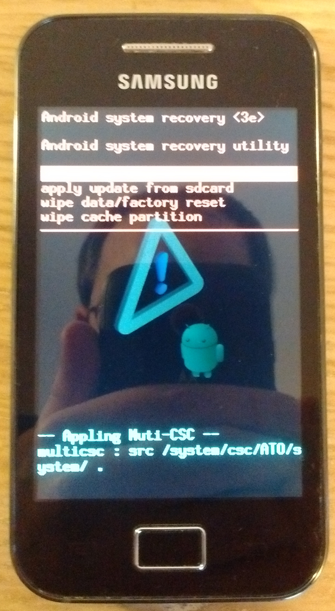

Samsung Galaxy Ace i (samsung-cooperve)
|
WARNING: This device is not recommended for future use with postmarketOS due to its armhf architecture. Alpine Linux (the distribution that postmarketOS extends) pmaports#599 has been considering dropping it. The processor of the device may support the armv7 architecture. If so, you can modify the device package and change the architecture accordingly. |
|
 S5830i Black | |
| Manufacturer | Samsung |
|---|---|
| Name | Galaxy Ace i |
| Codename | samsung-cooperve |
| Model | GT-S5830i |
| Released | 2011 |
| Type | handset |
| Hardware | |
| Chipset | Broadcom BCM21553 |
| CPU | ARM11 @ 832MHz |
| GPU | VideoCore IV |
| Display | 320 x 480 |
| Storage | 512 MB |
| Memory | 362 MB |
| Architecture | armhf |
| Software | |
| Original software | Android |
| Original version | 2.3.6 |
| postmarketOS | |
| Category | testing |
| Pre-built images | no |
{kind=link}
| Flashing |
Partial
|
|---|---|
| USB Networking |
Works
|
| Internal storage | |
| SD card | |
| Battery |
Works
|
| Screen |
Partial
|
| Touchscreen |
Partial
|
| Multimedia | |
| 3D Acceleration | |
| Audio |
Broken
|
| Camera |
Partial
|
| Camera Flash | |
| Connectivity | |
| WiFi |
Works
|
| Bluetooth |
Partial
|
| GPS | |
| NFC | |
| Modem | |
| Calls | |
| SMS | |
| Mobile data | |
| Miscellaneous | |
| FDE | |
| HDMI/DP | |
| Sensors | |
| Accelerometer | |
| Magnetometer | |
| Ambient Light | |
| Proximity | |
| Hall Effect | |
| Haptics | |
| Barometer | |
Contributors
- takluyver
- teddynight
- Mabope
Users owning this device
Entering Recovery Mode
Press Power + Volume Up + Home to start the phone into recovery mode.
You can choose the items with Volume Up and Volume Down and enter with the Home button
Entering flash Mode
Press Power + Volume Up + Volume Down to start the phone into flash mode
Installation
- The previous port from 2018 was outdated (using former APKBUILD format) so a new port was started. We did not achieve to flash the bootimg + intramfs on the device, even if this was stated as working in the previous port (see error in Heimdall below). Any information on how to perform this step is very welcomed. Also keep in mind that the information is not consistent : some information in this page may still reflect the status of the previous port (device booting, kernel flashing etc ...) whereas this section clearly states that we can not get pass the flashing step. If it is confirmed that this step does not work, someone should move this device to the "not booting" section and homogenize this page's content. - Mabope - December 2020
You need Pmbootstrap installed.
Building the kernel (working)
pmbootstrap init # select samsung-s5830i pmbootstrap kconfig check pmbootstrap checksum linux-samsung-s5830i pmbootstrap build linux-samsung-s5830i pmbootstrap checksum device-samsung-s5830i pmbootstrap build device-samsung-s5830i
Flash the kernel to the phone (not working)
This phone is not compatible with fastboot. The kernel was not successfully booted yet, but here are the explored leads.
With heimdall
Heimdall (XDA Forum, gitlab) is the open-source alternative to Odin.
First, enter the flash mode and flash the kernel into the phone. Then, install rootfs to the sdcard. (As there is not enough space on the phone.)
pmbootstrap install --sdcard=/dev/mmcblk0 pmbootstrap flasher flash_kernel
Problem: flashing the kernel fails at the step Setting up interface with error error [op_set_interface] setintf failed error -1 errno 110, you can refer to the 6 years old gitlab issue on heimdall.
Possible workaround: there is a workaround patching heimdall for bypassing libusb checks, more info in comments of github issue: https://github.com/Benjamin-Dobell/Heimdall/issues/340
With Odin
Odin is a proprietary software from Samsung to flash Samsung phone. A community forum started in May 2020, with an explanation of the interface.
Create an Odin-compatible file with the following commands.
pmbootstrap install --sdcard=/dev/mmcblk0 pmbootstrap export --odin
Then run the exported file samsung-s5830i.tar.md5 in Odin using the BL section.
Problem: Odin fails with the following log
<ID:0/005> KERNEL.bin.md5 <ID:0/005> FAIL!
It may come from bad values in the deviceinfo file.
With recovery
You can flash Clockworkmod Recovery (CWM, discontinued in 2016), which enables to flash a zip from sdcard. For S5830i there is only CWM 5.0.2.8 available (maybe others ?), which does not feature sideloading. So you have to export the zip file pmos-*.zip, copy it to the sdcard and install it in recovery mode.
To create the zip use
pmboostrap install --android-recovery-zip pmbootstrap export
The problem is the size of the android internal partitions. From start you have the following:
$ df -h Filesystem Size Used Available Use% Mounted on tmpfs 144.6M 52.0K 144.6M 0% /dev tmpfs 144.6M 0 144.6M 0% /mnt/asec tmpfs 144.6M 0 144.6M 0% /mnt/obb /dev/stl9 219.0M 151.2M 67.8M 69% /system /dev/stl10 35.4M 4.0M 31.4M 11% /cache df: /mnt/.lfs: Function not implemented /dev/stl11 187.3M 130.5M 56.7M 70% /data
And the zip file is 158.9MB so it does not fit into the internal storage.
| Possible solution: find a way to extend the storage or to export only the kernel to zip while the rootfs is on the sdcard (similarly to Odin and Heimdall method). |
What works
- Kernel compiles (https://github.com/androidarmv6/android_kernel_samsung_bcm21553-common )
What does not work
- No way to flash the kernel on the phone yet
Additional info
Information about this phone is sparse, there is one place with somewhat complete data about that device:
http://specdevice.com/showspec.php?id=3b87-5692-0000-00000033c587
There are different kinds of BCM21553 (thunderbird, athena-ray, cooperve, ...), as seen in the list of configs, for this phone the kind is cooperve.
Discontinued port
- Port from takluyver: repository pull-request
On-going port
- Port from Mabope: repository
Possible base kernels
Kernels from CM11 are good candidates, corresponding to version 2.6.35. They are built with GCC6 (not tested with more recent GCC versions).
Possible candidates:
- broadcomCM/android_kernel_samsung_bcm21553-common Last commit August 2014
- androidarmv6/android_kernel_samsung_bcm21553-common Last commit Dec 2014
- lokesh3440/android_kernel_samsung_cooperve/tree/master/common Last commit April 2014
- RafaelBaugis/Kernel-cooperve Last commit March 2014
- Thunder kernel
See also
- WIP-port
- Kernel and firmware
- Specs on GSMArena
- A birthday present from Broadcom - the Raspberry Pi foundation got an open-source release of the VideoCore IV firmware, also used in this phone.
- Android for All - the same announcement on the Broadcom blog.
- Many links for custom ROMs